AIP Architect brings LLM-powered capabilities to Solution Designer, enabling you to turn a set of workflow requirements into a step-by-step implementation plan for building a solution with the Palantir platform. You can use Solution Designer to explore options, plan workflows, and accelerate the building process with AIP Architect as an AI guide.
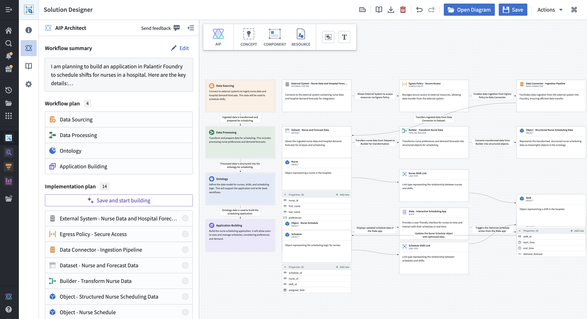
If you can provide AIP Architect with a description of what you want to accomplish with the platform - such as the problem, any constraints or requirements, or even thoughts on a desired solution or output - then AIP Architect will create an implementation plan for you in the form of a workflow graph. Drawing on a library of components and implementation patterns, an AIP Architect workflow graph describes the pieces of the workflow and how they fit together as a solution architecture, giving you a plan for how to build effectively in the platform.
There are several ways to use AIP Architect as part of Solution Designer.
From the initial Solution Designer home page, you can select Start planning to open the AIP Architect wizard.
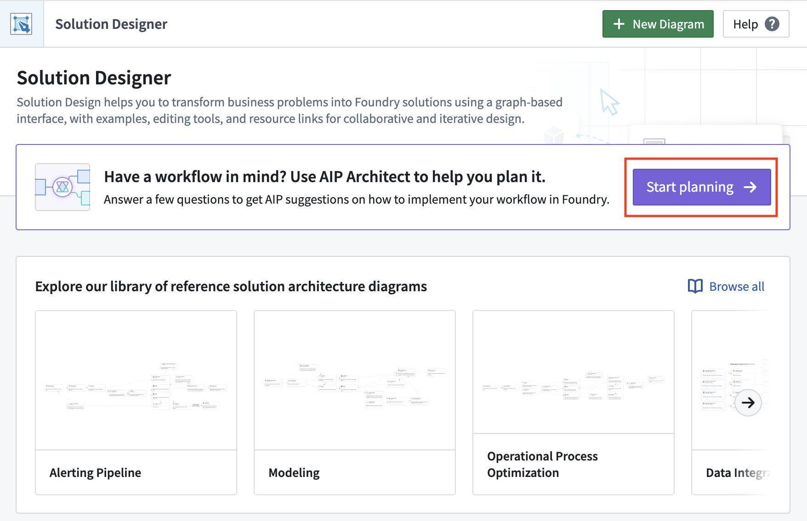
Or, from a new Solution Designer diagram, select Start planning to launch the AIP Architect wizard.
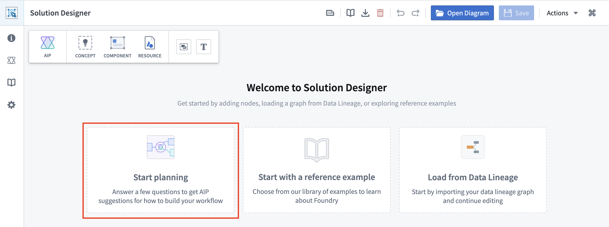
Alternatively, from an existing Solution Designer diagram, you can select the Concept icon in the diagram toolbar to add an AIP Architect concept node. This allows you to auto-generate an implementation plan and skip the AIP Architect wizard, enhancing existing diagrams with AI-generated workflow plans.
After opening the AIP Architect wizard, you will be guided through several prompts to provide information to AIP Architect, such as:
The first step in the AIP Architect wizard is to provide information about what you are trying to build. This could be a dataset, an application, a document, a dashboard, or something else.
After selecting the end product or artifact of your workflow, you will be prompted to describe any workflow requirements you might have; in this space, summarize the workflow that you have in mind.
For example, assume you want to build an application to schedule nurse shifts in a hospital. The screenshot below shows the wizard after entering a prompt containing these workflow requirements.
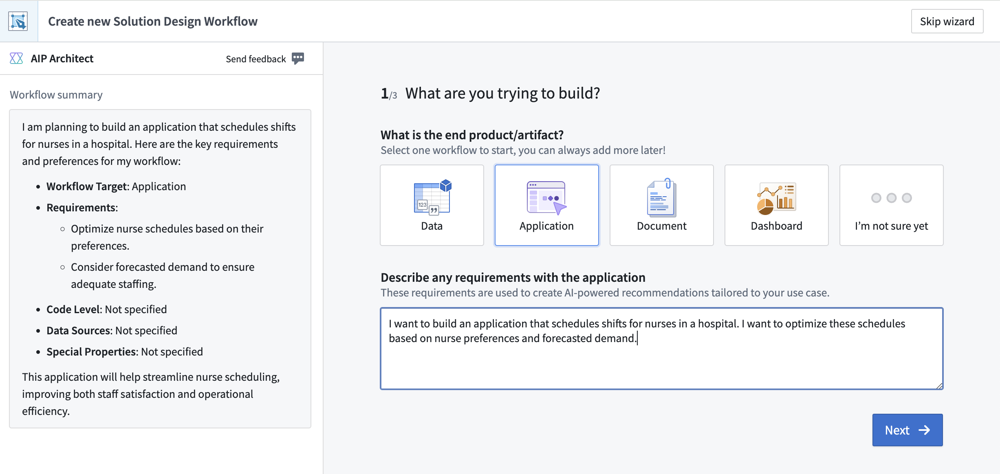
:::callout{theme="neutral"} AIP Architect uses the workflow summary you provide to generate suggestions when constructing your solution design graph. You can modify your summary at any time during the planning process to regenerate suggestions based on updated requirements. :::
As you refine your understanding of the workflow or if requirements change, you can edit your workflow summary:
AIP Architect will use the updated summary when generating implementation patterns for concept nodes, ensuring that suggestions remain aligned with your current workflow vision.
Your workflow prompt could be something simple, as in the prompt used in the nurse shift scheduling example:
I want to build an application that schedules shifts for nurses in a hospital. I want to optimize these schedules based on nurse preferences and forecasted demand.
You can also provide a more detailed set of workflow requirements to AIP Architect, such as the following prompt:
I work at a manufacturing company and we need to generate demand forecasts across the entire SKU base. I need to determine the best strategy for each SKU, leveraging both internal data, such as historical sales and inventory, and external data, such as weather patterns.
Beyond just a forward-looking forecast, I also want to look at "what-if" simulations for relevant inputs. I want to use natural-language prompts, such as "what if the weather is colder than expected next month?" or "what if I increase prices by 10%?". Then, I want to orchestrate the parameter changes to perform the simulation.
Key Features:
- Live demand simulation: Leverage model outputs, such as coefficients of correlation or confidence intervals to provide executives and planners with an easy-to-use simulation cockpit.
- Business-user-focused interface: Help non-technical business experts drive model iteration and validation against real data using their business experience.
- Highly-configurable modeling: Implement forecasts that make sense for the business at a daily, weekly, monthly, or yearly cadence across customers, SKUs and product lines.
After providing the initial workflow information to AIP Architect, the AIP Architect wizard will ask you about the data that will be powering this workflow. First, you will be prompted to select the source of the data for this workflow. Options include:
Then, you can provide information about how often the data is updated, the data scale, and any special properties about the data (whether the data is geospatial, time series, media, and so on). This information helps AIP Architect suggest the most appropriate platform applications to execute the workflow and deliver the desired outcome or output.
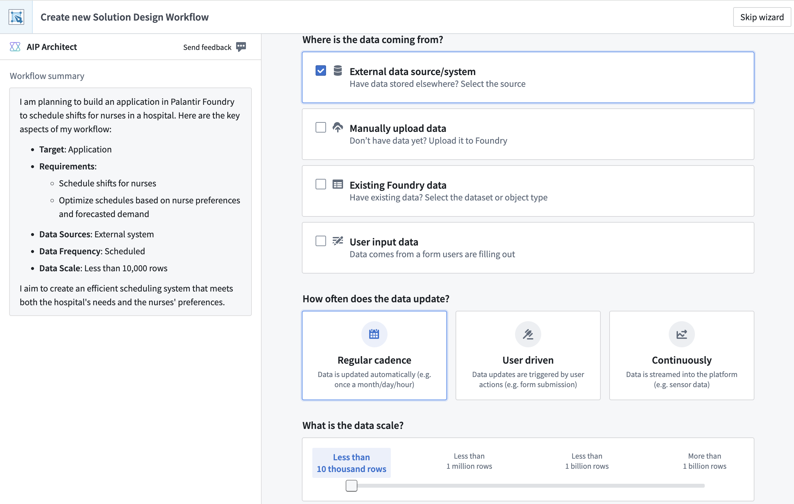
Finally, AIP Architect asks how you would prefer to build your workflow - the options here are "no code" (point-and-click), "low code" (writing basic functions), and "pro code" (working primarily in a code editor). Based on your response to this question, AIP Architect will select platform applications that fit the amount of code you want to use when building a workflow. After making your selection, select Generate workflow graph to create your workflow graph.
After your workflow graph has been generated, you will see an abstract representation of your workflow as a series of "concept nodes" connected by arrows. Each concept node represents a general part of the target workflow, such as data sourcing, data processing, Ontology, or application building.
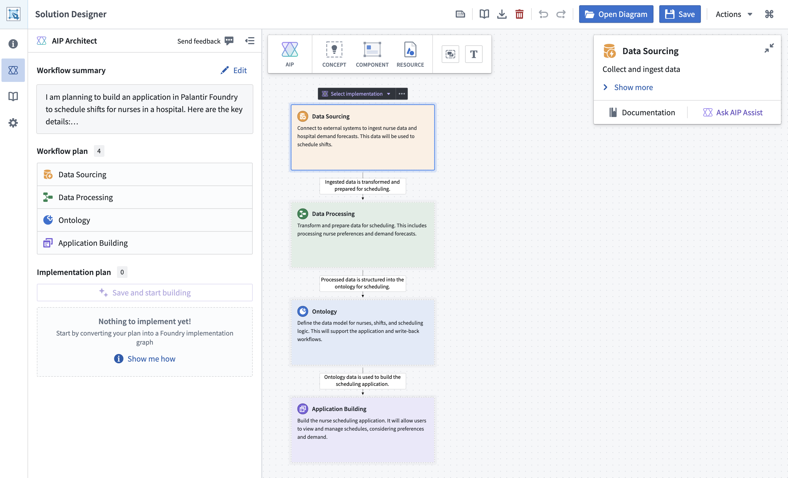
These concept nodes serve as a reference for the implementation of your workflow. To instruct AIP Architect to generate a more detailed workflow implementation, select a concept node (other than the Ontology node, which is discussed below) and choose the Select implementation dropdown. AIP Architect will suggest potential implementation plans for your workflow.
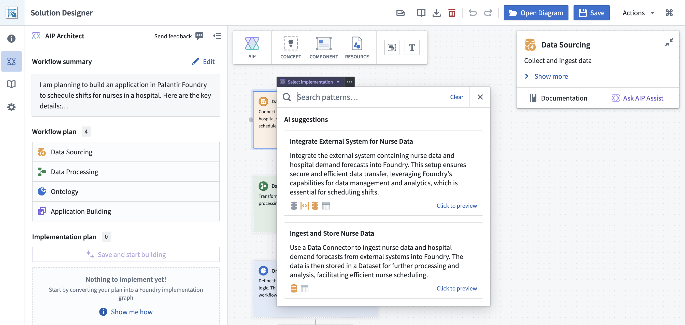
Before committing to an implementation pattern, you can preview it on your graph:
The preview feature allows you to explore multiple implementation options without cluttering your diagram, helping you make informed decisions about the best approach for each part of your workflow.
As AIP Architect generates implementation suggestions, it provides real-time explanations. You will see:
The explanation streams as it is generated, so you can begin reading while the full suggestion is still being prepared.
You can add implementation plans to all the non-Ontology concept nodes. AIP Architect will automatically connect nodes together based on the provided context. You can also add additional concept nodes, such as an analytics or modeling node, by selecting the Concept icon in the left toolbar.
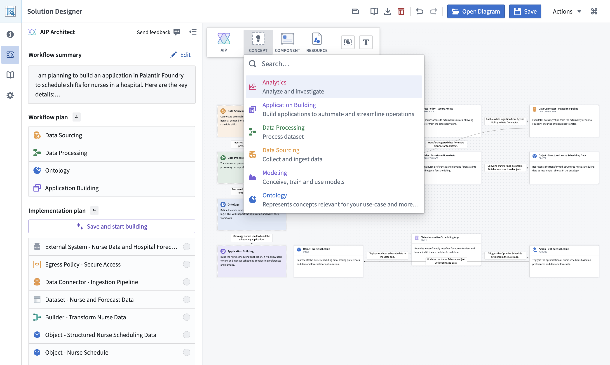
Plans generated by AIP Architect can be modified by users. AIP Architect will take any changes made by users into account when generating implementations for other parts of the workflow.
The Ontology node differs from other concept nodes in that the Select implementation dropdown is replaced by a Generate data model dropdown. The Generate data model dropdown provides a user-editable prompt where you can describe what you want your Ontology model to look like; based on this prompt, AIP Architect will generate a set of object types, object type properties, and link types on the graph.
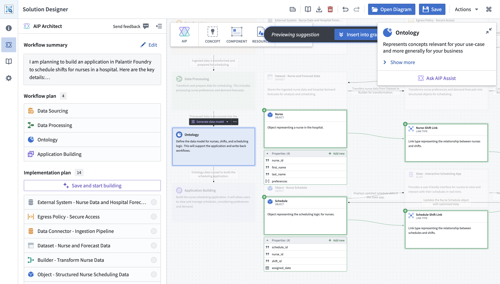
AIP Architect uses large language models to generate workflow plans and implementation suggestions. If your environment has multiple AI models available, you can select which model to use:
Different models may produce different styles of suggestions or have different strengths. Consider the following when selecting a model:
The selected model applies to all AIP Architect operations, including abstract graph generation, implementation pattern suggestions, and contextual explanations.
:::callout{theme="neutral"} If AIP features are not available, verify that AIP is enabled for your enrollment and that at least one supported LLM is configured. Contact your Foundry administrator if you need access to AIP features. :::
After generating a workflow plan, you can begin to actually build the workflow with AIP Architect. The left-hand AIP Architect sidebar displays an overview of your workflowâs implementation plan, automatically generated based on the workflow graph.
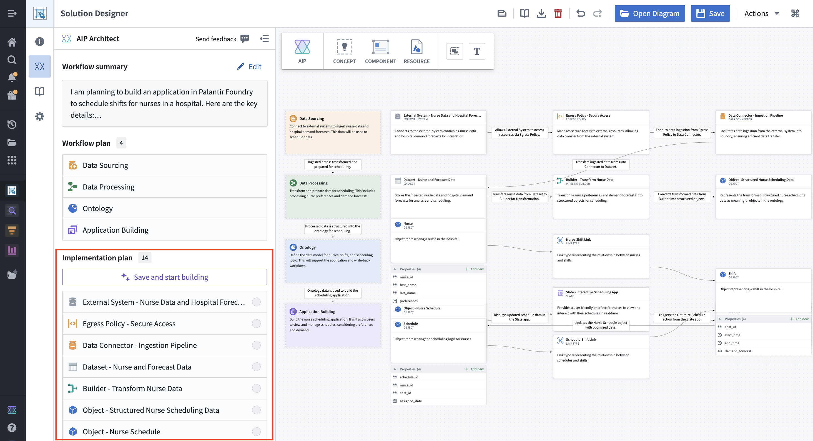
AIP Architect will guide you through the process of creating your workflow using the Walkthrough helper. To begin, select Save and Start Building.
At this point, an AIP Architect Walkthrough panel will appear to provide you with a step-by-step guide through the actual implementation process. You can skip to any part of the walkthrough, or navigate the steps in order with the Next and Previous navigation buttons at the top.
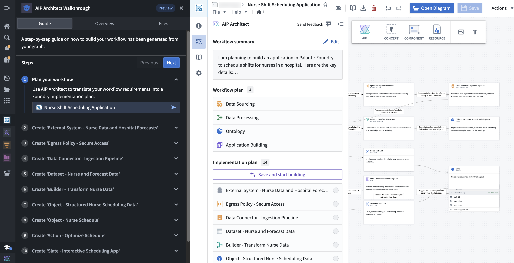
From here, you can use the indicated applications to build an operational workflow.